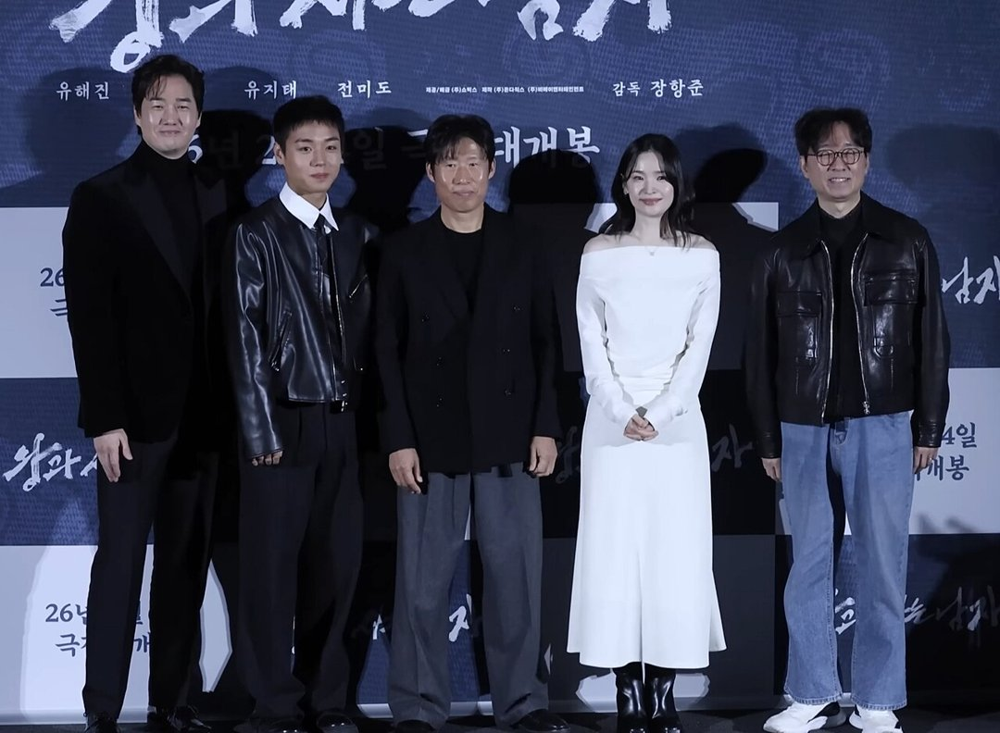
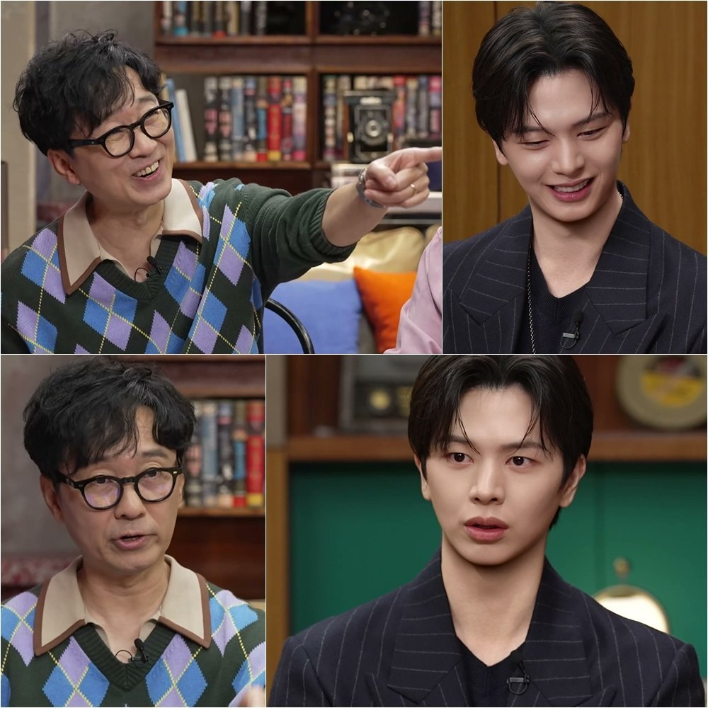

26억 원을 받은 사람은 주인공이 아니었어요. '왕과 사는 남자(왕사남)'의 장항준 감독과 제작자들이 주연 배우를 뺀 배우와 스태프 수백 명에게 흥행 인센티브 26억 원을 나눠 줬어요. 게다가 이런 일이 이번이 처음도 아니었어요.
📷 사진 1 자리
▲ 영화 '왕과 사는 남자' 제작보고회(2025년 12월 19일) · 사진: TV10 / CC BY 3.0 / 위키미디어 공용
누가 내고 누가 받았나
돈을 낸 사람은 세 명이에요. 장항준 감독과 제작을 맡은 장원석·임은정 대표가 각자 받은 수익금을 모았어요.
받은 쪽은 주연을 제외한 출연 배우와 스태프예요. 한 사람에게 같은 금액을 준 게 아니라 각자의 역할과 비중을 따져 수백 명에게 나눴어요.
이 이야기는 SBS 예능 '거장항준'을 만드는 이동원 PD가 최근 자기 SNS에 올리면서 알려졌어요. 장 감독이 진행하는 프로그램의 연출자라 당사자들에게 직접 들은 이야기라고 밝혔어요.
📷 사진 2 자리
▲ SBS '거장항준'을 진행하는 장항준 감독 · 사진=SBS 제공
계약서에 없던 돈이라는 점
이동원 PD가 가장 놀란 대목은 이 돈이 '줘야 하는 돈'이 아니었다는 점이에요. 영화가 얼마나 흥행하든 제작사는 계약한 보수만 지급하면 끝이에요.
그런데 약속한 적도, 누가 달라고 한 적도 없는 돈을 모두에게 나눴어요. 이 PD는 영화 흥행을 "로또 같은 일"에 빗대며 평생 한 번 있을까 한 행운으로 번 돈을 동료들과 나눈 데 놀랐다고 적었어요.
'왕사남' 흥행 성적, 그리고 처음이 아니었던 나눔
'왕과 사는 남자'는 올해 2월 개봉해 관객 1693만 명을 모았어요. 2026년 최고 흥행작이에요. 한국 영화 역대 흥행 순위로는 2위예요. 26억이라는 금액이 나올 수 있었던 배경이에요.
더 눈여겨볼 건 그다음 이야기예요. 이 PD에 따르면 세 사람은 예전에 다른 영화가 흥행했을 때도 모든 배우와 스태프에게 약속에 없던 인센티브를 줬어요.
그동안 알려지지 않은 이유도 함께 전해졌어요. 장 감독이 평소 입버릇처럼 하던 말이 있었다고 해요. "좋은 미담은 절대 퍼지지 않는다."
기사 제목은 대부분 장항준 감독 한 사람을 앞세웠지만, 돈을 함께 낸 제작자 두 명이 빠지면 이 이야기는 반쪽이에요. 흥행 수익을 현장과 나누는 방식이 감독 개인의 선행이 아니라 이 제작진이 이어 온 관행이라는 점이 더 오래 남을 대목이에요.
장항준 감독과 장원석·임은정 대표가 나눈 26억 원은 계약에 없던 흥행 인센티브였고 이번이 처음도 아니었어요. 장 감독은 SBS '거장항준'에서 진행을 맡고 있어요.
함께 보면 좋은 이슈

